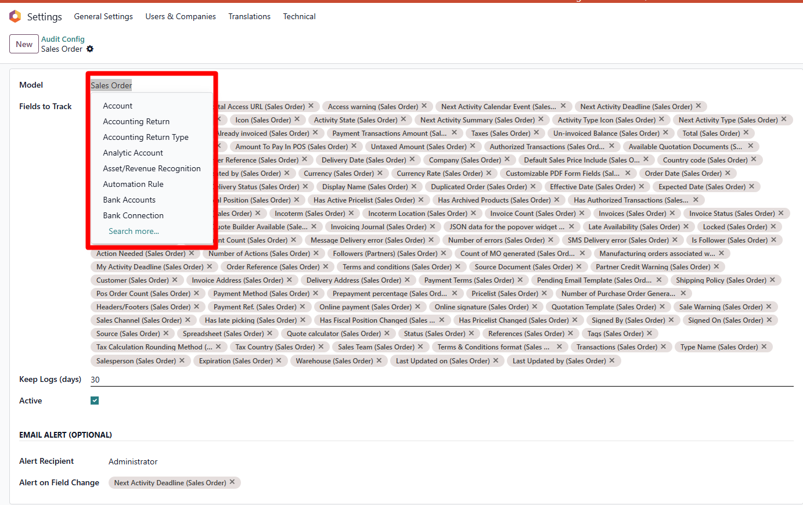
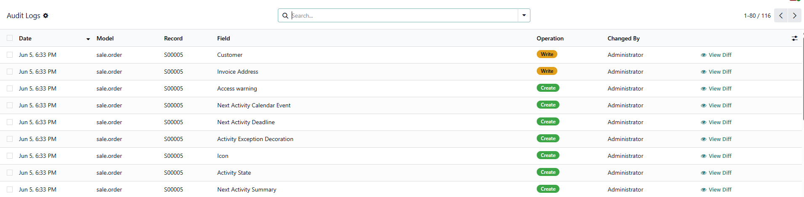
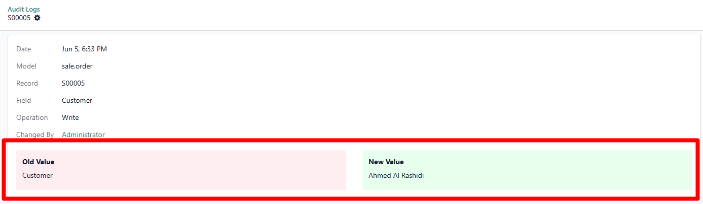
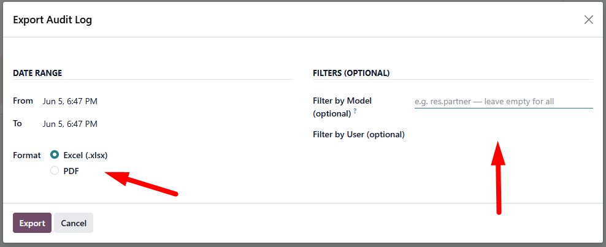
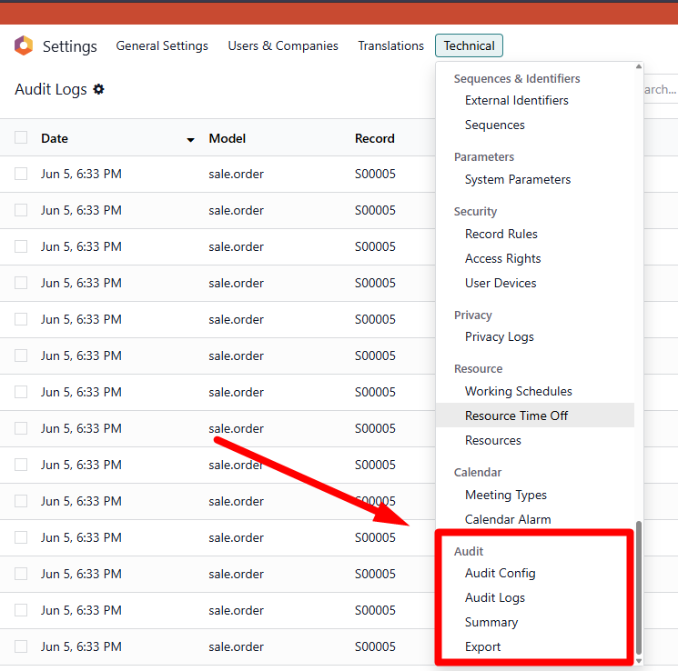

Your users can change anything in Odoo and you have no record of who did it or when.
Audit Log Viewer & Export adds a complete field-change tracking system to Odoo. Configure which models and fields to watch from a simple settings form under Settings › Technical. Every create, edit, and delete operation on those fields is recorded automatically, with the old value and new value stored for every change.
Review changes in a searchable log list, open a side-by-side diff popup to compare old vs. new at a glance, and export any date range to a formatted Excel workbook or PDF report. Set up email alerts so the right person is notified the moment a watched field changes.
|
📋
Complete Audit Trail
Every field change, record creation, and deletion logged with timestamp, user, model, and field name. |
🔍
Side-by-Side Diff
One click opens a diff popup showing the old value (red) and new value (green) side by side for any log entry. |
📤
Excel & PDF Export
Export any date range to a formatted .xlsx workbook or a printable PDF report. Filter by model and user before exporting. |
|
🔔 Email Alerts
Assign an alert recipient and select trigger fields. An email is sent the moment those fields change on a single record. |
🗓 Auto-Retention
Set a retention period per config. A scheduled job deletes logs older than the limit in batches, keeping the table lean. |
|
📊 Graph & Pivot Summary
Built-in graph and pivot views show audit activity by model, operation type, and date so you can spot unusual patterns. |
⚡ Simple Configuration
Configuration lives in Settings › Technical. Pick a model, tick the fields to track, and save. The module patches the model at runtime automatically. |
| 1 | Go to Settings › Technical › Audit › Audit Config and click New. |
| 2 | Choose a model (e.g. Sale Order) and tick the fields you want to track. Optionally set an alert recipient and select alert trigger fields. |
| 3 | Save the config. The module patches the model in the registry. All changes to those fields are now logged automatically. |
| 4 | Open Audit › Audit Logs to see the searchable list. Click View Diff on any row to compare old and new values side by side. |
| 5 | Go to Audit › Export, set a date range and optional filters, then click Export Excel or Print PDF. |
Audit Config: Choose a Model and Select Fields to Track

Audit Logs List: Searchable Log with Operation Badges

View Diff Popup: Old Value (Red) vs New Value (Green)

Export Wizard: Filter by Date Range, Model, and User

Menu Position: Settings › Technical › Audit

| Technical Name | ma_audit_log_viewer |
| Version | 18.0.1.0.0 |
| License | LGPL-3 |
| Compatibility | Odoo 18 Community & Enterprise |
| Dependencies | base, mail |
| Python Library | xlsxwriter (pip install xlsxwriter) |
| Models Added | audit.config, audit.log.line, audit.export.wizard |